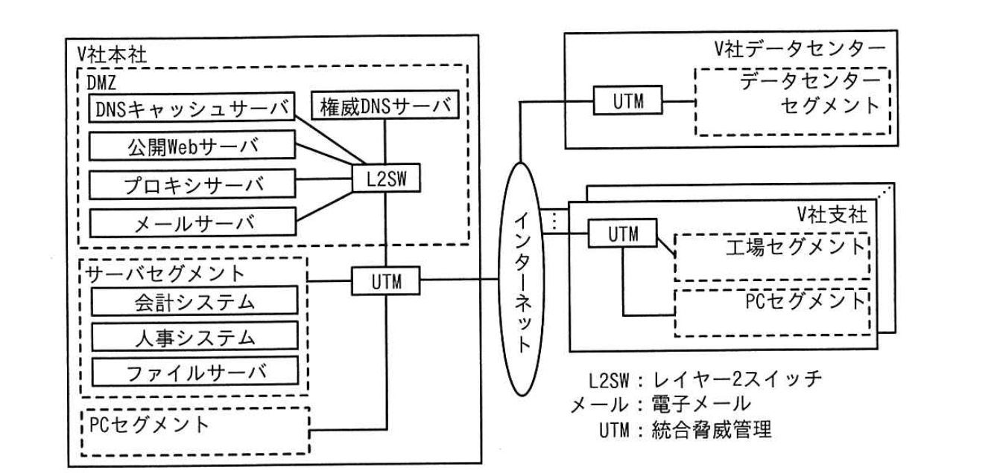

問4 IT資産管理及び施弱性管理
V社は、従業員3,000名の製造業である。東京に本社，大阪、名古屋、福岡に支社がある。V社は、J事業部、K事業部、情報システム部（以下、情シ部という），総務部，経理部などから成る。 v 社の社内システム及びネットワークの運用並びに情報セキュリティ管理は，情シ部のB部長とS主任を含む8名の部員が担当している。V社のネットワーク構成を図1に示す。

図1 V社のネットワーク構成
公開 Web サーバでは、V社製品のキャンペーンなどを紹介している。V社本社と各支社及びV社データセンターの間は UTMのVPN機能を使用して通言を行っている。各支社には、UTMを除いてインターネットからアクセス可能なIT機器はない。 V社のIT資産管理、ドメイン名及びIPアドレスの管理、導入ソフトウェア（以下、ソフトウェアをSwという）の管理並びに脆弱性管理の現状を表1に示す。
| 項目 | 状況 |
|---|---|
| IT資産管理 | 1．IT資産管理台帳に対して、IT資産の登録、更新及び削除を行う。 2．IT資産管理台帳は、全社で共有されている。 3．インターネットからアクセス可能な全てのIT資産を公開IT資産と定義する。 4．IT資産管理台帳の管理項目には、資産ID、資産名称、取得金額、管理部門名、管理者名、公開IT資産かどうかの区分、及びその特記事項を含める。また、公開IT資産の場合はGIP注1）及びドメイン名も含める。 5．IT資産管理台帳への登録は次のように行っている。 （1）情シ部が購入するIT資産は、情シ部がIT資産管理台帳に登録する。 （2）事業部がV社データセンター又はV社DMZにサーバを設置する場合は、情シ部に設置申請し、承認を得た後に設置する。情シ部は承認後IT資産管理台帳に登録する。 （3）事業部が他社データセンター、クラウドサービス又はレンタルサービスを契約して、サーバなどを利用する場合については、IT資産管理台帳に登録していない。 6．IT資産は、年1回の棚卸しで管理部門が現物確認する。その際に、管理部門がIT資産管理台帳を更新する。IT資産の廃棄は管理部門が実施し、その際に、管理部門がIT資産管理台帳を更新する。 |
| ドメイン名及びIPアドレスの管理 | 1．V社データセンター及びV社本社で使用するIPアドレス及びドメイン名は、次のように行っている。 （1）情シ部が、"y-sha.co.jp"というドメイン名（以下、V社のドメイン名という）をレジストラのW社から取得し、V社データセンター、V社DMZなどにある公開IT資産に使用している。ドメイン名の使用料は情シ部が支払っている。JPRSが管理しているドメイン名の登録者情報の組織名にV社を、担当者情報の部署名に情シ部を、担当者名にS主任を登録している。 （2）GIPは、ISPのR社から割り当てられている。GIPの使用料は、情シ部が回線使用料と併せてR社に支払っている。JPNICの登録者情報の組織名にV社を、担当者情報の部署名に情シ部を、担当者名にS主任を登録している。 （3）事業部がV社データセンター又はV社DMZにサーバなどを設置する場合は、情シ部にIPアドレス使用申請を行う。 （4）事業部がV社のドメイン名を使用する場合は、情シ部にドメイン使用申請を行う。この際、情シ部は、必要なDNSレコードを登録している。 2．事業部が他社データセンター、クラウドサービス又はレンタルサービスを契約し、新たなドメイン名を登録してサーバを利用する場合は、次のように行っている。 （1）GIPは、各サービス会社から割り当てられたものを使用している。 （2）ドメイン名は、各事業部が取得している。なお、使用するドメイン名は全て、トップレベルドメインが".jp"のドメインを使用している。 |
| 導入SWの管理 | 1．PCに導入するSWは、IT資産管理ツール（以下、AMツールという）で管理しており、IT資産管理台帳には登録せず、PCの"資産ID"をAMツールに入力して管理している。 2．ビジネス上、重要なサーバに導入するSWは、AMツールで管理している。ビジネス上、重要ではないサーバに導入するSWは、主なものをIT資産管理台帳の"その他特記事項"に記入している。 |
| 脆弱性管理 | 1．サーバに導入したSWの脆弱性情報は、情シ部が脆弱性のニュースを毎日見て確認している。 2．情シ部が、脆弱性のニュースで話題になった脆弱性情報全てを全部門に連絡している。 3．連絡を受けた各部門が取捨選択し、必要に応じて対応している。 |
注1）インターネットから当該IT資産にアクセスする時のGIPである。
最近，次のようなサイバー攻撃のニュースが報道された。 （1） CVE-20XX-XXXXXという Web サーバでの通信の暗号化に関する弱性が公表され、それを悪用した攻撃で、ある広告代理店に大きな被害が発生した。 （2） 著名な会社が1年前、CDN事業者のサービスを利用してWebサーバを立ち上げ、1か月間商品のキャンペーンを行った。この Web サーバには、その会社のサブドメインを使用した。キャンペーン後すぐに、CDNサービスを解約したが、今になって、そのサブドメインが海外の会社の広告サイトとして使われていることが発覚した。 （3） 競合他社で、不要になったにもかかわらず公開されたままとなっていた Webサーバが改ざんされ、フィッシングに悪用されていることが発覚した。
これらを受けて、V社の経営層は、V社でも対策が必要だと考え、対策の検討と実施を情シ部に指示した。（2）については、V社でも、CDN事業者のサービスを利用してWeb サーバを立ち上げてキャンペーンを行った後，CDN サービスを解約した経緯があったので、緊急に確認した。その結果、問題があることが分かり、①図1中のサーバの設定を変更した。この事態も踏まえて、公開IT資産管理及び弱性管理を見直すことにした。
[公開 IT 資産管理及び脆弱性管理の目標の設定] 情シ部のB部長とS主任は、まず、公開 IT資産管理の現状を分析し，公開IT資産管理及び施弱性管理の主な目標を表2にまとめた。
| 目標 | 内容 |
|---|---|
| K-1 | IT資産管理台帳に公開IT資産を漏れなく登録する。具体的には、次のようなケースの登録漏れをなくす。 （1）事業部がクラウドサービスを契約して利用している公開IT資産（省略） |
| K-2 | 情シ部が、サーバの導入SWを一元管理する。 |
| K-3 | 重要な脆弱性を事業部が修正したかどうかを情シ部が確認できるようにする。 |
| K-4 | 利用が終了した公開IT資産について、必要な措置を漏れなく行う。 |
[目標K-1の実現] まず、目標K-1について検討を行い，各事業部への未登録の公開IT資産の調査依頼を図2にまとめた。
次の未登録の公開IT資産を調査し、その一覧を回答すること
・クラウドサービスを契約して利用している公開IT資産
・[a]公開IT資産
・[b]公開IT資産
次は、目標K-1の実現に関するB部長とS主任の会話である。
- B部長
- 事業部への調査依頼だけでは漏れが出そうだ。情部としても調査すべきだが、どのような方法があるのか。
- S主任
- 自分でインターネットをスキャンする方法（以下、オンアクセス型という）と、既に外部に構築されているデータベースを検索する方法（以下、検索エンジン型という）があります。
- B部長
- どちらの方がよいだろうか。
- S主任
- オンアクセス型では他社の環境に負荷を与える可能性があります。また、スキャンするには時間が掛かります。今回は検索エンジン型を使用したいと思います。
- B部長
- 分かった。検索エンジン型だと、具体的には、どのような方法があり、どのような情報が収集できるのかな。
- S主任
- まず、IPアドレスの割当て、ドメイン名の登録などに関する情報をレジストラヌはレジストリに問い合わせることができます。そのための標準プロトコルとして、[c]が用意されており、RFC 3912で定義されています。次に、Webブラウザから利用できるサービスには、無償のものとして，ドメインの検索サービス（以下、✕サービスという）と、GIP の検索サービス（以下、Yサービスという）があります。その他、一部有償になりますが、2 サービスというサービスなどがあります。✕サービスで検索可能な情報を表3に、Yサービスで検索可能な情報を表 4に、2サービスで検索可能な情報を表5に示します。
| 検索キーワード | 検索可能な情報 |
|---|---|
| 組織名注1） | 登録されているドメイン名 |
| ドメイン名 | 組織名、ドメイン名の担当者識別番号注2）、ドメイン名を管理するネームサーバ名注3）、登録年月日、接続年月日、最終更新日時など |
| ネームサーバ名 | ネームサーバのIPアドレス、登録年月日、最終更新日時など |
| ドメイン名の担当者識別番号注2） | ドメイン名の担当者名、メールアドレス、ドメイン名の部署名、電話番号など |
注1）検索キーワードとして入力した文字列が"組織名"とマッチした検索結果が全て得られる。 注2）一部の".jp"ドメインの場合だけ検索可能である。 注3）セカンダリDNSなどが設置されている場合は、複数得られる。
| 検索キーワード | 検索可能な情報 |
|---|---|
| GIP | 組織名、GIPの担当者識別番号、ネームサーバ名、割当て年月日、返却年月日、最終更新日時など |
| GIPの担当者識別番号 | GIPの担当者名、メールアドレス、GIPの部署名、電話番号など |
| 検索キーワード | 検索可能な情報 |
|---|---|
| ドメイン名注記1） | GIP、GIP割当て元の事業者名、FQDN、位置情報（国名、都市名、緯度・経度）、ポート番号、OS、応答メッセージ情報注1） |
| GIP注記2） | GIP、GIP割当て元の事業者名、FQDN、位置情報（国名、都市名、緯度・経度）、ポート番号、OS、応答メッセージ情報注1） |
| 組織名注記3） | GIP、GIP割当て元の事業者名、FQDN、位置情報（国名、都市名、緯度・経度）、ポート番号、OS、応答メッセージ情報注1） |
注記1 検索キーワードとして入力した文字列が、"ドメイン名"とマッチした検索結果が全て得られる。 注記2 検索キーワードとして入力した文字列が、"GIP"とマッチした検索結果が全て得られる。 注記3 検索キーワードとして入力した文字列が、"ドメイン名を取得した組織名"又は"GIPを取得した組織名"とマッチした検索結果が全て得られる。 注1）製品名やバージョン情報、デフォルトパスワードの使用などである。
- B部長
- 当社が管理すべき公開 IT資産をできるだけ多くリストアップしてほしい。
- S主任
- 事業部から提出されるリストと突合せができるように、当社が取得した GIP，ドメイン名，GIP の組織名、部署名及び担当者名，ドメイン名の組織名，部署名及び担当者名並びに FQDNを抽出してまとめたリスト（以下、Fリストという）を作成してみます。Fリストの作成手順を図3に示します。
手順1：[あ]サービスを用い、検索キーワードとして[d]を入力して検索し、検索結果として[e]及び[f]、を得る。
手順2-1：手順1の結果を基に、[い]サービスを用い、検索キーワードとして[g]の組織名及び[g]を指定して検索し、検索結果として[g]の[h]を得る。
手順2-2：手順2-1の結果を基に、[い]サービスを用い、検索キーワードとして[g]の[j]を指定して検索し、
検索結果として[g]の[g]の部署名及び担当者名を得る。
手順3-1：手順1の結果を基に、[う]サービスを用い、検索キーワードとして[f]の組織名及び [f]を指定して検索し、検索結果として[f]の[h]を得る。
手順3-2：手順3-1の結果を基に、[う]サービスを用い、検索キーワードとして[f]の[h]を指定して検索し、検索結果として[f]の[f]の部署名及び担当者名を得る。
手順4：得られた検索結果からFリストをまとめる。
注記1 手順2-1〜3-2は、手順1で得られた検索結果のうち、".jp"ドメインのものについて、それぞれ行う。 注記2 手順4では、Fリストの作成に必要な検索結果だけを選択する。
[V社の管理すべき IT資産の確認と管理の強化] 事業部の提出した未登録の公開IT 資産一覧とS主任の調査結果を突合したところ、幾つかFリストだけにあるもの（以下、調査漏れという）が見つかった。次は、B部長とS主任の会話である。
- B部長
- どのような調査漏れが見つかったのか。
- S主任
- 事業部から調査漏れのリストは表6のとおりです。事業部からの説明では、古いケースで調査しきれなかったとのことでした。
| 結果項番 | GIP | GIPの部署名 | ドメイン名の組織名 | FQDN |
|---|---|---|---|---|
| 結果1 | （省略） | V社G事業部 | V社 | sub1.v-sha-9.jp |
| 結果2 | （省略） | V社H部 | P協議会 | （省略） |
- S主任
- 表6の結果1については、SSHでは接続できませんでしたが、公開サービスはWeb だけが稼働しているようだということが、X,Y,Z サービス以外の②調査から分かりました。しかし、G 事業部はもはや存在しません。調べたところ、K 事業部が業務継承部門です。また、利用 OSやSWもバージョンが古く、多くの脆弱性が内在しているようだということが、③別の調査から分かりました。 攻撃を受けて被害が発生しないようにするために，④表6の結果1の公開IT資産を継続利用する場合としない場合のそれぞれの場合にK 事業部が行うべき具体的な対応方法を伝えます。
[脆弱性管理の改善] 次に，目標Kー2及び目標Kー3に対する実現方法を検討した。目標Kー2については、S 主任が必要なルールを決めた。次は、目標K-3の実現方法についてのB部長とS主任の会話である。
- B部長
- 目標Kー2が実現できたとしても、次々発表される弱性に対して、対策の優先度などはどのように判断すればよいのか。
- S主任
- 胎弱性についての⑤CVSSの深刻度と⑥KEV カタログへの掲載の有無に基づいて判断するのがよいです。対策の優先度などの判断ルールを作成します。
- B部長
- 分かった。そのルールも踏まえ、目標K-3を実現するために、⑦表 1の脆弱性管理の改善策を考えてほしい。
- S主任
- 分かりました。
さらに、目標K-4について、公開 IT資産の利用終了時に行うべき措置をS主任がまとめた。 経営層に対応策を説明し、了承を得た。その後，B部長とS主任が作成したルールに従って、V社の公開 IT資産管理及び弱性管理の運用が開始された。
設問1 本文中の下線①について、設定を変更したサーバを、図1中から一つ選び、サーバ名を答えよ。また、その設定の変更内容を、30字以内で具体的に答えよ。
設問2[目標K-1の実現]について答えよ。 （1） 図2中の[a]、[b]に入れる適切な内容を、それぞれ30字以内で答えよ。 （2） 本文中の[c]に入れる適切な字句を，英字10字以内で答えよ。 （3） 図 3 中の[あ]〜[う]に入れる適切な文字を、X,Y,Zから選び、答えよ。 （4） 図 3中の[d]〜[h]に入れる適切な内容を、次の解答群の中から選び、記号で答えよ。 解答群 ア FQDN イ GIP ウ GIP 割振り元の事業者名 エ OS オV社 カ 位置情報 キ 担当者識別番号 ケ ポート番号 ク ドメイン名 コ メールアドレス
設問3[V社の管理すべきIT資産の確認と管理の強化]について答えよ。 （1） 本文中の下線②について、調査方法を、40字以内で具体的に答えよ。 （2） 本文中の下線③について，調査方法を、40字以内で具体的に答えよ。 （3） 本文中の下線④について、二つの場合における主な対応方法を，それぞれ35字以内で具体的に答えよ。
設問4 [弱性管理の改善]について答えよ。 （1） 本文中の下線⑤について，CVSSの最新のバージョン番号を、4字以内で答えよ。 （2） 本文中の下線⑥について、KEV カタログのフルスペルを、解答群の中から選び、記号で答えよ。 解答群 ア Key Exploited Vulnerabi lities catalog イ Key Exposure Vulnerabilities catalog ウ Known Exploited Vulnerabilities catalog エ Known Exposure Vulnerabilities catalog （3） 本文中の下線⑥について，KEV カタログに掲載される胎弱性はどのようなものか。掲載される条件のうち主なものを、20字以内で答えよ。 （4） 本文中の下線⑦について、表1の弱性管理の項番1，2の改善策を，項番1の改善策は60字以内で、項番2の改善策は40字以内でそれぞれ具体的に答えよ。
問4 IT資産管理及び脆弱性管理
設問1
解答例
サーバ名：権威DNSサーバ 変更内容：終了したサブドメインのCNAMEレコードを削除する
ニュース（2）の事案：V社はCDN事業者のサービスを利用してWebサーバを立ち上げ、キャンペーン後にCDNサービスを解約した。しかしDNSのCNAMEレコードを削除しなかったため、攻撃者が同じCDNサービスを再契約して同じサブドメイン名でコンテンツを配信できる状態（サブドメインテイクオーバー）になっていた。変更すべきサーバは「権威DNSサーバ」であり、設定変更内容は「終了したサブドメインに対応するCNAMEレコードを削除する」こと（30字以内）。CNAMEレコードを残したままにすると「Dangling CNAME」と呼ばれる状態になり、攻撃者がCNAME先サービスを再取得することでサブドメインを乗っ取れる。「CNAMEレコードの削除」という文言を明示的に含めることが採点の鍵。
設問2(1)
解答例
a＝レンタルサービスを契約して利用した
b＝他社データセンターを契約して利用した（順不同）
目標K-1（公開IT資産管理台帳の整備）のため、情シ部が関知しないシャドーIT（事業部が独自に契約した外部サービス等）を洗い出す調査依頼の内容を問う。[a]（1つ目の未登録IT資産の発生パターン）：「外部のレンタルサーバやクラウドサービス（IaaS/PaaS）を事業部が独自に契約して利用していたこと」が典型。情シ部の承認なしに事業部が契約したクラウドリソースは管理台帳に記載されない（シャドークラウド）。[b]（2つ目のパターン）：「他社データセンター（コロケーション施設）を事業部が独自に契約してサーバを設置していたこと」。どちらもV社の公式な管理外IT資産として脆弱性管理の死角となる。「順不同」と指定されていることから2つの解答の順序は問われない。
設問2(2)
解答例
WHOIS
本文中の[c]（「組織名で検索するとその組織が登録したドメイン名を取得できるサービス」）の英字名称を10字以内で答える問題。答えはWHOIS（RFC 3912で規定されるプロトコル）。WHOISはドメイン登録者の「組織名・技術担当者連絡先・登録日・有効期限・ネームサーバ」等の情報を照会できるサービス。V社の組織名でWHOIS検索することで、V社が登録した全ドメイン名を一覧できる（ただし注1より「一部の.jpドメインのみ」の制限がある）。.jpドメインのWHOISはJPRS（日本レジストリサービス）が運営、gTLDのWHOISはICANNが認定したレジストラが管理。近年はGDPR対応でWHOIS情報の一部が非公開になるケースが増えている。
設問2(3)
解答例
あ＝Z い＝Y う＝X
図3の公開IT資産特定フロー中の[あ]〜[う]に入る検索サービス種別（X・Y・Z）の対応を問う問題。各サービスの入出力仕様（注記）から対応を導く。手順2-1の[あ]：ドメイン名を入力してFQDN一覧を出力するサービス（注記1より「ドメイン名とマッチした検索結果が得られる」）→DNS正引き相当→[あ]=Z。手順2-2の[い]：FQDNを入力してGIPを出力するサービス（注記2より「GIPとマッチした検索結果が得られる」）→[い]=Y。手順3の[う]：GIPを入力して組織名を出力するサービス（注記3より「組織名とマッチした検索結果が得られる」）→IPアドレスブロックの割り当て組織を照会するWHOIS相当→[う]=X。最終的に「V社に紐づくFQDN・GIPの一覧（Fリスト）」が完成し、管理台帳と突合する。
設問2(4)
解答例
e＝オ f＝ア g＝ク h＝キ
IT資産管理台帳（Fリスト）に登録すべき情報の組合せを解答群から選ぶ問題。管理台帳の目的は「公開IT資産を一元管理して脆弱性スキャン・インシデント対応・資産棚卸しを迅速に実施すること」。[d]=イ（GIP：インターネットからのアクセスに使う実IPアドレス。ポートスキャン・脆弱性スキャンの対象指定に必須）。[e]=オ（V社：資産のオーナー組織を識別する情報）。[f]=ア（FQDN：外部からの接続に使うホスト名。脆弱性診断の対象指定に使用）。[g]=ク（ドメイン名：資産が属するドメインの管理に必要）。[h]=キ（担当者識別番号：インシデント時の連絡先・対応責任者の特定に必要）。不要な情報：カ（位置情報）・ウ（GIP割振り元の事業者名）・ケ（ポート番号）は別途スキャンで動的確認すべき情報または管理台帳での一括管理が不要な情報。
設問3(1)
解答例
ポートスキャンでWebのポートだけが開いていることを確認する
Fリストのみに存在してV社事業部調査では報告がなかった資産（調査漏れ）が「実際に公開中か否か」を確認する調査方法を問う（下線②、40字以内）。適切な調査方法は「Fリストに記載されたGIPまたはFQDNを対象にポートスキャン（nmap等）を実行し、WebのポートHTTP（80）またはHTTPS（443）が開いているかを確認する」こと。ポートが開いていれば実際に公開中の資産であり管理台帳への追加が必要と判断できる。単にpingやネットワーク疎通確認だけでは「Webサーバとして公開されているか」は判断できないため、Webポートへのポートスキャンが適切。
設問3(2)
解答例
脆弱性スキャナーを実行して、脆弱性の有無を確認する
調査漏れと確認された公開IT資産の「セキュリティ上の問題の有無を確認する」調査方法を問う（下線③、40字以内）。適切な調査方法は「脆弱性スキャナー（Nessus・OpenVAS等）を対象GIPまたはFQDNに対して実行し、既知脆弱性の有無を確認する」こと。脆弱性スキャナーによるPF診断で「ソフトウェアのバージョン情報と既知CVEの照合」「ポート・サービス設定の問題検出」が可能になり、管理漏れ資産のリスクを定量的に評価できる。Webアプリが動作している場合はWebアプリ診断（DAST）も実施すると詳細なアプリ固有の脆弱性を確認できる。スキャン結果に基づいて設問3(3)の「継続するか終了するかの判断と対応」につながる。
設問3(3)
解答例
継続する場合：一旦、サービスを停止し、脆弱性を修正後に再開する
終了する場合：速やかにネットワークから切り離し、機器を廃棄する
調査漏れ公開IT資産について「継続利用する場合」と「利用終了とする場合」それぞれの主な対応を35字以内×2で答える問題。継続利用する場合：当該資産は脆弱性が未対応の状態でインターネットに公開されているため、まず「サービスをインターネットから切り離した状態（停止・アクセス遮断）にし、脆弱性を修正してから公開を再開する」という手順が必要。停止せずにパッチを当てると修正完了までの間も脆弱な状態で公開され続けるリスクがある。利用終了とする場合：「速やかにネットワークから切り離し（接続遮断・DNSレコード削除含む）、機器・データをセキュアに廃棄する（データ消去含む）」こと。設問1で学んだサブドメインテイクオーバーの教訓からCNAMEレコードの削除も忘れないこと。
設問4(1)
解答例
4.0
下線⑤（「CVSSの最新バージョンを用いて評価する」）のバージョン番号を4字以内で答える問題。CVSSv4.0（Common Vulnerability Scoring System version 4.0）は2023年11月にFIRSTが公開した最新バージョン。CVSSv3.1からの主な変更点：①評価グループが「Base / Threat / Environmental / Supplemental」の4グループに再整理（v3.1のTemporalがThreatに改称）、②CVSS-B・CVSS-BT・CVSS-BE・CVSS-BTEの4つのNomenclatureを定義、③OT・IoT向けの追加評価指標（Safety・Automatable等）を新設。答えは「4.0」（4字以内）。v3.0・v3.1と誤答しないよう注意。
設問4(2)
解答例
ウ
下線⑥（「KEVカタログを参照する」）のKEVカタログのフルスペルを解答群から選ぶ問題。KEV = Known Exploited Vulnerabilities（既知の悪用された脆弱性）。米国CISA（Cybersecurity and Infrastructure Security Agency）が公開・維持管理するカタログ。KEVへの掲載条件：①CVE IDが割り当てられている、②攻撃者による実際の悪用が確認されている、③パッチ・ワークアラウンド等の対策が存在する。米国連邦政府機関にはKEV掲載CVEへの対応が義務付けられている（BOD 22-01）。選択肢の誤りパターン：ア「Key Exploited」・イ「Key Exposure」・エ「Known Exposure」はすべて誤り。正解はウ「Known Exploited Vulnerabilities catalog」。「Known（既知の）」「Exploited（悪用された）」の2単語を正確に覚えることが鍵。
設問4(3)
解答例
実際に悪用された
KEVカタログに掲載された脆弱性をCVSSスコアに関わらず優先対応すべき理由の核心部分を問う。KEVへの掲載基準はCVSSスコアの高さではなく「実際に攻撃者による悪用が確認されたこと」。CVSSスコアは理論的な危険度を計算した値だが、高CVSSでも実際に攻撃に使われるとは限らない。一方、KEV掲載は「現実の攻撃で既に悪用された事実」を意味し、理論値より実績を優先することで実際の被害リスクが高い脆弱性を最優先で対処できる。設問の解答は「実際に悪用された（ことが確認されたから）」という事実の記述。EPSSが「悪用される可能性（将来予測）」であるのに対し、KEVは「悪用された事実（過去の実績）」という違いを整理しておくと理解が深まる。
設問4(4)
解答例
項番1：情シ部がIT資産管理台帳にあるSWについて、重要な脆弱性情報が発表されていないかを継続的に確認する
項番2：該当SWを保有する管理部門に対策の優先度を連絡し、対策実施を確認する
目標K-3（脆弱性管理ルールの改善で対応遅れを防ぐ）のための具体的な運用手順の追加内容を問う問題。既存ルールの問題点は「脆弱性情報の収集・対応判断が各管理部門任せで情シ部の管理が弱い」点。項番1の追加（脆弱性情報の収集強化）：「情シ部がIT資産管理台帳に登録されたSWについて、JVN・NVD・CISAのKEV等の脆弱性データベースを継続的に確認し、重要な脆弱性情報が公表された際に対応が必要なSWの管理部門に通知する」仕組みの追加。各部門が個別に情報収集するのではなく情シ部が一元的に収集・管理することで見落としを防ぐ。項番2の追加（対応指示・確認の強化）：「情シ部が脆弱性の対応優先度を判断して管理部門に対策実施を指示し、完了まで追跡・確認する」プロセスの追加。PDCAの「Check・Act」を情シ部が担う体制への転換が改善の本質。